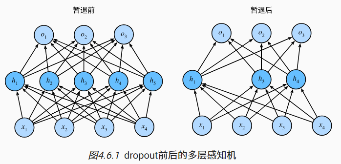

AI学习记录2
多层感知机
隐藏层
如果标签通过放射变换后确实和输入数据相关，那么上一章的内容就以及足够。但是实际上线性的假设往往难以成立：线性意味着单调，任何特征的增大都会导致模型输出的增大或者模型输出的减小，但如同用体温预测死亡率，对猫狗图像分类的这一系列问题，线性的假设是难以成立的。
所以我们需要考虑特征之间的相关交互作用，即使用观测数据来联合学习隐藏层表示和应用于该表示的线性预测器。可以通过在网络中加入一个或多个隐藏层来突破线性模型的限制。
该多层感知机由4个输入、3个输出，隐藏层包含5个隐藏单元。输入层不涉及任何计算，因此使用此网络产生输出只需要实现隐藏层和输出层的计算。所以层数为2，且两个层是全连接的，参数开销很大。
隐藏层的输出用$\mathbf{H} \in \mathbb{R}^{n \times h}$表示，称为隐藏表示（hidden representations）。也称隐藏层变量（hidden-layer variable）或隐藏变量（hidden variable）。
因为隐藏层和输出层都是全连接的，
所以我们有隐藏层权重$\mathbf{W}^{(1)} \in \mathbb{R}^{d \times h}$
和隐藏层偏置$\mathbf{b}^{(1)} \in \mathbb{R}^{1 \times h}$
以及输出层权重$\mathbf{W}^{(2)} \in \mathbb{R}^{h \times q}$
和输出层偏置$\mathbf{b}^{(2)} \in \mathbb{R}^{1 \times q}$。
形式上，我们按如下方式计算单隐藏层多层感知机的输出
$\mathbf{O} \in \mathbb{R}^{n \times q}$：
但如果仅仅如此的话相较于单层模型是没有益处的，因为本质上仍是仿射函数：
所以需要非线性的激活函数（activation function）$\sigma$。
激活函数的输出（例如，$\sigma(\cdot)$）被称为活性值（activations）。
一般来说，有了激活函数，就不可能再将我们的多层感知机退化成线性模型：
由于$\mathbf{X}$中的每一行对应于小批量中的一个样本，
出于记号习惯的考量，
我们定义非线性函数$\sigma$也以按行的方式作用于其输入，
即一次计算一个样本。
但激活函数往往可以按元素操作，意味着在计算每一层的线性部分之后，我们可以计算每个活性值，
而不需要查看其他隐藏单元所取的值。对于大多数激活函数都是这样。
激活函数
1. ReLU函数
ReLU全名修正激活单元（rectified linear unit,ReLU）其实现简单，表现良好。它要么让参数消失，要么让参数通过，缓解了以往神经网络的梯度消失问题。可以采用参数化ReLU（Parameterized ReLU，pReLU）使得负的参数也能够通过。

2. sigmoid函数
对于一个定义域在$\mathbb{R}$中的输入，sigmoid函数将输入变换为区间(0, 1)上的输出
其导数是
3. tanh函数
该函数类似于sigmoid,将输入压缩转换到区间(-1,1)上。
多层感知机从零开始实现
代码如下1
2
3
4
5
6
7
8
9
10
11
12
13
14
15
16
17
18
19
20
21
22
23
24
25
26#初始化模型参数
num_inputs, num_outputs, num_hiddens = 784, 10, 256
W1 = nn.Parameter(torch.randn(
num_inputs, num_hiddens, requires_grad=True) * 0.01)
b1 = nn.Parameter(torch.zeros(num_hiddens, requires_grad=True))
W2 = nn.Parameter(torch.randn(
num_hiddens, num_outputs, requires_grad=True) * 0.01)
b2 = nn.Parameter(torch.zeros(num_outputs, requires_grad=True))
params = [W1, b1, W2, b2]
#激活函数
def relu(X):
a = torch.zeros_like(X)
return torch.max(X, a)
#模型
def net(X):
X = X.reshape((-1, num_inputs))
H = relu(X@W1 + b1) # 这里“@”代表矩阵乘法
return (H@W2 + b2)
#损失函数
loss = nn.CrossEntropyLoss(reduction='none')
#训练
num_epochs, lr = 10, 0.1
updater = torch.optim.SGD(params, lr=lr)
d2l.train_ch3(net, train_iter, test_iter, loss, num_epochs, updater)
多层感知机的简洁实现
模型实现如下，与softmax可以进行对比1
2
3
4
5
6
7
8
9net = nn.Sequential(nn.Flatten(),
nn.Linear(784, 256),
nn.ReLU(),
nn.Linear(256, 10))
def init_weights(m):
if type(m) == nn.Linear:
nn.init.normal_(m.weight, std=0.01)
net.apply(init_weights)#;
对比softmax代码如下：1
net = nn.Sequential(nn.Flatten(), nn.Linear(784, 10))
模型选择、欠拟合和过拟合
机器学习的目标是发现某些模式（pattern），这些模式捕获到训练集潜在的总体规律。如何发现可以泛化的模式是机器学习的根本问题。
将模型在训练数据上拟合的比在潜在分布中更接近的现象称为过拟合（overfitting）， 用于对抗过拟合的技术称为正则化（regularization）。
训练误差（training error）是指，
模型在训练数据集上计算得到的误差。
泛化误差（generalization error）是指，
模型应用在同样从原始样本的分布中抽取的无限多数据样本时，模型误差的期望。但我们永远不能准确地计算出泛化误差。
1.统计学习理论
训练数据和测试数据往往假设是从相同的分布中独立提取的。这通常被称为独立同分布假设，意味着对数据进行抽样的过程没有进行“记忆”。但是实际上这样的假设难以成立，如不同地区，不同时间的抽样往往会影响样本，从而违背独立同分布假设。
2.模型复杂性
统计学家认为，能够轻松解释任意事实的模型是复杂的，
而表达能力有限但仍能很好地解释数据的模型可能更有现实用途。
事实上，具有更多参数的模型可能被认为更复杂，
参数有更大取值范围的模型可能更为复杂。
通常对于神经网络，我们认为需要更多训练迭代的模型比较复杂，
而需要早停（early stopping）的模型（即较少训练迭代周期）就不那么复杂。
3.验证集
在确定超参数之前，不希望用到测试集，即不能依靠测试数据来进行模型选择。
但也不能仅仅依靠训练数据来选择模型，因为这样便无法估计训练数据的泛化误差。
常见做法是将数据分成三份，除了训练和测试数据集之外，还需要增加验证数据集（validation dataset），也称验证集（validation set），虽然实际上验证集和测试集的边界十分模糊。
在训练数据稀缺时，存在一种解决方案是是采用$K$折交叉验证。
这里，原始训练数据被分成$K$个不重叠的子集。
然后执行$K$次模型训练和验证，每次在$K-1$个子集上进行训练，
并在剩余的一个子集（在该轮中没有用于训练的子集）上进行验证。
最后，通过对$K$次实验的结果取平均来估计训练和验证误差。
多项式回归
下面用多项式的例子来说明过拟合和模型复杂性的经典直觉。
给定由单个特征$x$和对应实数标签$y$组成的训练数据，
我们试图找到下面的$d$阶多项式来估计标签$y$。
这是一个简单的线性回归问题，而高阶多项式函数的复杂性则会比低阶多项式函数复杂得多，其参数较多，模型函数的选择范围较广。
因此在固定训练数据集的情况下，
高阶多项式函数相对于低阶多项式的训练误差应该始终更低。
事实上，当数据样本包含了$x$的不同值时， 函数阶数等于数据样本数量的多项式函数可以完美拟合训练集。
同时数据集的大小会影响拟合程度。训练数据集中的样本越少，我们就越有可能（且更严重地）过拟合。 随着训练数据量的增加，泛化误差通常会减小。给出更多的数据，我们可能会尝试拟合一个更复杂的模型。
对应的代码如下：
第一步生成测试数据，采用以下三阶多项式来生成训练和测试数据的标签
在优化的过程中，我们通常希望避免非常大的梯度值或损失值。
这就是我们将特征从$x^i$调整为$\frac{x^i}{i!}$的原因，
这样可以避免很大的$i$带来的特别大的指数值。
我们将为训练集和测试集各生成100个样本。
1 | max_degree = 20 # 多项式的最大阶数 |
下面对模型进行训练和测试1
2
3
4
5
6
7
8
9
10
11
12
13
14
15
16
17
18
19
20
21
22
23
24
25
26
27
28
29
30
31
32#评估损失
def evaluate_loss(net, data_iter, loss): #@save
"""评估给定数据集上模型的损失"""
metric = d2l.Accumulator(2) # 损失的总和,样本数量
for X, y in data_iter:
out = net(X)
y = y.reshape(out.shape)
l = loss(out, y)
metric.add(l.sum(), l.numel())
return metric[0] / metric[1]
#定义训练函数
def train(train_features, test_features, train_labels, test_labels,
num_epochs=400):
loss = nn.MSELoss(reduction='none')
input_shape = train_features.shape[-1]
# 不设置偏置，因为我们已经在多项式中实现了它
net = nn.Sequential(nn.Linear(input_shape, 1, bias=False))
batch_size = min(10, train_labels.shape[0])
train_iter = d2l.load_array((train_features, train_labels.reshape(-1,1)),
batch_size)
test_iter = d2l.load_array((test_features, test_labels.reshape(-1,1)),
batch_size, is_train=False)
trainer = torch.optim.SGD(net.parameters(), lr=0.01)
animator = d2l.Animator(xlabel='epoch', ylabel='loss', yscale='log',
xlim=[1, num_epochs], ylim=[1e-3, 1e2],
legend=['train', 'test'])
for epoch in range(num_epochs):
d2l.train_epoch_ch3(net, train_iter, loss, trainer)
if epoch == 0 or (epoch + 1) % 20 == 0:
animator.add(epoch + 1, (evaluate_loss(net, train_iter, loss),
evaluate_loss(net, test_iter, loss)))
print('weight:', net[0].weight.data.numpy())
最后是拟合情况：
- 三阶多项式函数拟合
1
2
3# 从多项式特征中选择前4个维度，即1,x,x^2/2!,x^3/3!
train(poly_features[:n_train, :4], poly_features[n_train:, :4],
labels[:n_train], labels[n_train:]) - 线性函数拟合（欠拟合）
1
2
3# 从多项式特征中选择前2个维度，即1和x
train(poly_features[:n_train, :2], poly_features[n_train:, :2],
labels[:n_train], labels[n_train:]) - 高阶多项式函数拟合（过拟合）
1
2
3# 从多项式特征中选取所有维度
train(poly_features[:n_train, :], poly_features[n_train:, :],
labels[:n_train], labels[n_train:], num_epochs=1500)
权重衰减（$L_2$正则化）
假设我们已经拥有了尽可能多的高质量数据，就可以将重点放在正则化技术上来防止过拟合。
限制特征的数量是环节过拟合的一种常用技术，简单地丢弃特征对这项工作而言太过于生硬，需要更为细粒度的工具来调整复杂度。
一种简单的方法是通过线性函数
$f(\mathbf{x}) = \mathbf{w}^\top \mathbf{x}$
中的权重向量的某个范数来度量其复杂性，
例如$| \mathbf{w} |^2$。
要保证权重向量比较小，
最常用方法是将其范数作为惩罚项加到最小化损失的问题中。
将原来的训练目标最小化训练标签上的预测损失，
调整为最小化预测损失和惩罚项之和。
现在，如果我们的权重向量增长的太大，
我们的学习算法可能会更集中于最小化权重范数$| \mathbf{w} |^2$。
举之前的线性函数的例子，损失如下：
$\mathbf{x}^{(i)}$是样本$i$的特征，
$y^{(i)}$是样本$i$的标签，
$(\mathbf{w}, b)$是权重和偏置参数。
通过正则化常数$\lambda$来平衡$| \mathbf{w} |^2$描述的损失，使用验证数据拟合：
使用$L_2$范数的一个原因是它对权重向量的大分量施加了巨大的惩罚。
这使得我们的学习算法偏向于在大量特征上均匀分布权重的模型。
在实践中，这可能使它们对单个变量中的观测误差更为稳定。
相比之下，$L_1$惩罚会导致模型将权重集中在一小部分特征上，
而将其他权重清除为零。
这称为特征选择（feature selection），这可能是其他场景下需要的。
$L_2$正则化回归的小批量随机梯度下降更新如下式，一般网络输出层的偏置项不会被正则化：
接下来用一个简单例子来展现权重衰减：
首先是生成数据,问题的位数增加到$d = 200$，
并使用一个只包含20个样本的小训练集。
1 | n_train, n_test, num_inputs, batch_size = 20, 100, 200, 5 |
初始化模型参数：1
2
3
4def init_params():
w = torch.normal(0, 1, size=(num_inputs, 1), requires_grad=True)
b = torch.zeros(1, requires_grad=True)
return [w, b]
定义$L_2$范数乘法1
2def l2_penalty(w):
return torch.sum(w.pow(2)) / 2
训练代码如下，其将模型拟合训练数据集，并在测试数据集上进行评估：1
2
3
4
5
6
7
8
9
10
11
12
13
14
15
16
17def train(lambd):
w, b = init_params()
net, loss = lambda X: d2l.linreg(X, w, b), d2l.squared_loss
num_epochs, lr = 100, 0.003
animator = d2l.Animator(xlabel='epochs', ylabel='loss', yscale='log',
xlim=[5, num_epochs], legend=['train', 'test'])
for epoch in range(num_epochs):
for X, y in train_iter:
# 增加了L2范数惩罚项，
# 广播机制使l2_penalty(w)成为一个长度为batch_size的向量
l = loss(net(X), y) + lambd * l2_penalty(w)
l.sum().backward()
d2l.sgd([w, b], lr, batch_size)
if (epoch + 1) % 5 == 0:
animator.add(epoch + 1, (d2l.evaluate_loss(net, train_iter, loss),
d2l.evaluate_loss(net, test_iter, loss)))
print('w的L2范数是：', torch.norm(w).item())
使用权重衰减进行拟合后效果更好。
可以在实例化优化器时直接通过weight_decay指定weight decay超参数。
默认情况下，PyTorch同时衰减权重和偏移。
这里我们只为权重设置了weight_decay，所以偏置参数不会衰减。1
2
3
4
5
6
7
8
9
10
11
12
13
14
15
16
17
18
19
20
21
22
23def train_concise(wd):
net = nn.Sequential(nn.Linear(num_inputs, 1))
for param in net.parameters():
param.data.normal_()
loss = nn.MSELoss(reduction='none')
num_epochs, lr = 100, 0.003
# 偏置参数没有衰减
trainer = torch.optim.SGD([
{"params":net[0].weight,'weight_decay': wd},
{"params":net[0].bias}], lr=lr)
animator = d2l.Animator(xlabel='epochs', ylabel='loss', yscale='log',
xlim=[5, num_epochs], legend=['train', 'test'])
for epoch in range(num_epochs):
for X, y in train_iter:
trainer.zero_grad()
l = loss(net(X), y)
l.mean().backward()
trainer.step()
if (epoch + 1) % 5 == 0:
animator.add(epoch + 1,
(d2l.evaluate_loss(net, train_iter, loss),
d2l.evaluate_loss(net, test_iter, loss)))
print('w的L2范数：', net[0].weight.norm().item())
暂退法（Dropout）
面对更多特征而样本不足时，线性模型往往会过拟合。
给出更多样本而不是特征时，线性模型不会过拟合。
但线性模型没有考虑到特征之间的相互作用。
对于每个特征，线性模型必须指定正的或负的权重，而忽略其他特征。
与线性模型不同，神经网络并不局限于单独查看每个特征，而是学习特征之间的交互。
例如，神经网络可能推断“尼日利亚”和“西联汇款”一起出现在电子邮件中表示垃圾邮件，但单独出现则不表示垃圾邮件。
而且即使我们有比特征多得多的样本，深度神经网络也有可能过拟合。
经典泛化理论认为，为了缩小训练和测试性能之间的差距，应该以简单的模型为目标。
简单性以较小维度的形式展现，在权重衰减的讨论中可以看到参数的范数也代表了一种有用的简单性度量
简单性的另一个角度是平滑性，即函数不应该对其输入的微小变化敏感。基于此，学者提出了一个想法：在前向传播过程中，计算每一内部层的同时注入噪声，这就是我们要提到的暂退法（dropout）。在整个训练过程的每一次迭代中，标准暂退法包括在计算下一层之前将当前层中的一些节点置零。
在标准暂退法正则化中，通过按保留（未丢弃）的节点的分数进行规范化来消除每一层的偏差。
换言之，每个中间活性值$h$以暂退概率$p$由随机变量$h’$替换，如下所示：
根据此模型的设计，其期望值保持不变，即$E[h’] = h$。对之前的多层感知机运用效果如下图：

代码流程如下：
实现dropout_layer函数1
2
3
4
5
6
7
8
9
10def dropout_layer(X, dropout):
assert 0 <= dropout <= 1
# 在本情况中，所有元素都被丢弃
if dropout == 1:
return torch.zeros_like(X)
# 在本情况中，所有元素都被保留
if dropout == 0:
return X
mask = (torch.rand(X.shape) > dropout).float()
return mask * X / (1.0 - dropout)
定义模型参数：1
num_inputs, num_outputs, num_hiddens1, num_hiddens2 = 784, 10, 256, 256
定义模型，可以为每一层分别设置暂退概率，常见的技巧是在靠近输入层的地方设置较低的暂退概率，暂退法只在训练期间有效：1
2
3
4
5
6
7
8
9
10
11
12
13
14
15
16
17
18
19
20
21
22
23
24
25
26
27
28dropout1, dropout2 = 0.2, 0.5
class Net(nn.Module):
def __init__(self, num_inputs, num_outputs, num_hiddens1, num_hiddens2,
is_training = True):
super(Net, self).__init__()
self.num_inputs = num_inputs
self.training = is_training
self.lin1 = nn.Linear(num_inputs, num_hiddens1)
self.lin2 = nn.Linear(num_hiddens1, num_hiddens2)
self.lin3 = nn.Linear(num_hiddens2, num_outputs)
self.relu = nn.ReLU()
def forward(self, X):
H1 = self.relu(self.lin1(X.reshape((-1, self.num_inputs))))
# 只有在训练模型时才使用dropout
if self.training == True:
# 在第一个全连接层之后添加一个dropout层
H1 = dropout_layer(H1, dropout1)
H2 = self.relu(self.lin2(H1))
if self.training == True:
# 在第二个全连接层之后添加一个dropout层
H2 = dropout_layer(H2, dropout2)
out = self.lin3(H2)
return out
net = Net(num_inputs, num_outputs, num_hiddens1, num_hiddens2)
训练与测试类似前文。而简洁实现中，只需在每个全连接层之后添加一个Dropout层， 将暂退概率作为唯一的参数传递给它的构造函数。在训练时，Dropout层将根据指定的暂退概率随机丢弃上一层的输出（相当于下一层的输入）。在测试时，Dropout层仅传递数据。1
2
3
4
5
6
7
8
9
10
11
12
13
14
15
16
17net = nn.Sequential(nn.Flatten(),
nn.Linear(784, 256),
nn.ReLU(),
# 在第一个全连接层之后添加一个dropout层
nn.Dropout(dropout1),
nn.Linear(256, 256),
nn.ReLU(),
# 在第二个全连接层之后添加一个dropout层
nn.Dropout(dropout2),
nn.Linear(256, 10))
def init_weights(m):
if type(m) == nn.Linear:
nn.init.normal_(m.weight, std=0.01)
#net.apply(init_weights);
trainer = torch.optim.SGD(net.parameters(), lr=lr)
d2l.train_ch3(net, train_iter, test_iter, loss, num_epochs, trainer)
前向传播、反向传播和计算图
前向传播
前向传播（forward propagation或forward pass） 指的是：按顺序（从输入层到输出层）计算和存储神经网络中每层的结果。
其中$\mathbf{W}^{(1)} \in \mathbb{R}^{h \times d}$
是隐藏层的权重参数。
将中间变量$\mathbf{z}\in \mathbb{R}^h$通过激活函数$\phi$后，
我们得到长度为$h$的隐藏激活向量：
隐藏变量$\mathbf{h}$也是一个中间变量。
假设输出层的参数只有权重$\mathbf{W}^{(2)} \in \mathbb{R}^{q \times h}$，
我们可以得到输出层变量，它是一个长度为$q$的向量：
根据$L_2$正则化的定义，给定超参数$\lambda$，正则化项为：
其中矩阵的Frobenius范数是将矩阵展平为向量后应用的$L_2$范数。
最后，模型在给定数据样本上的正则化损失为：
我们将$J$称为目标函数（objective function）。前向传播的计算图如下：
其中正方形表示变量，圆圈表示操作符。
左下角表示输入，右上角表示输出。
注意显示数据流的箭头方向主要是向右和向上的。
反向传播
反向传播（backward propagation或backpropagation）指的是计算神经网络参数梯度的方法。
简言之，该方法根据微积分中的链式规则，按相反的顺序从输出层到输入层遍历网络。
该算法存储了计算某些参数梯度时所需的任何中间变量（偏导数）。
假设我们有函数$\mathsf{Y}=f(\mathsf{X})$和$\mathsf{Z}=g(\mathsf{Y})$，
其中输入和输出$\mathsf{X}, \mathsf{Y}, \mathsf{Z}$是任意形状的张量。
利用链式法则，我们可以计算$\mathsf{Z}$关于$\mathsf{X}$的导数
在这里，我们使用$\text{prod}$运算符在执行必要的操作（如换位和交换输入位置）后将其参数相乘。
对于向量，这很简单，它只是矩阵-矩阵乘法。
对于高维张量，我们使用适当的对应项。
运算符$\text{prod}$指代了所有的这些符号。
回想一下，在上文计算图中的单隐藏层简单网络的参数是
$\mathbf{W}^{(1)}$和$\mathbf{W}^{(2)}$。
反向传播的目的是计算梯度$\partial J/\partial \mathbf{W}^{(1)}$和
$\partial J/\partial \mathbf{W}^{(2)}$。
为此，我们应用链式法则，依次计算每个中间变量和参数的梯度。
计算的顺序与前向传播中执行的顺序相反，因为我们需要从计算图的结果开始，并朝着参数的方向努力。具体流程查看反向传播
训练神经网络
在训练神经网络时，前向传播和反向传播相互依赖。 对于前向传播，我们沿着依赖的方向遍历计算图并计算其路径上的所有变量。 然后将这些用于反向传播，其中计算顺序与计算图的相反。
以上述简单网络为例：一方面，在前向传播期间计算正则项取决于模型参数$\mathbf{W}^{(1)}$和$\mathbf{W}^{(2)}$的当前值。
它们是由优化算法根据最近迭代的反向传播给出的。
另一方面，反向传播期间参数 :eqref:eq_backprop-J-h的梯度计算，
取决于由前向传播给出的隐藏变量$\mathbf{h}$的当前值。
因此，在训练神经网络时，在初始化模型参数后，
我们交替使用前向传播和反向传播，利用反向传播给出的梯度来更新模型参数。
注意，反向传播重复利用前向传播中存储的中间值，以避免重复计算。
带来的影响之一是我们需要保留中间值，直到反向传播完成。
这也是训练比单纯的预测需要更多的内存（显存）的原因之一。
此外，这些中间值的大小与网络层的数量和批量的大小大致成正比。
因此，使用更大的批量来训练更深层次的网络更容易导致内存不足（out of memory）错误。
数值稳定性和模型初始化
若选取的初始参数不当，容易威胁到优化算法的稳定性：要么是要么是梯度爆炸（gradient exploding）问题： 参数更新过大，破坏了模型的稳定收敛； 要么是梯度消失（gradient vanishing）问题： 参数更新过小，在每次更新时几乎不会移动，导致模型无法学习。
sigmoid函数容易发生梯度消失的问题，可采用ReLU函数
神经网络中存在参数化固有对成型的问题，可以采用暂退法正则化打破这样的对称性
参数初始化可以考虑Xavier初始化，通常，Xavier初始化从均值为零，方差
$\sigma^2 = \frac{2}{n_\mathrm{in} + n_\mathrm{out}}$
的高斯分布中采样权重。
我们也可以将其改为选择从均匀分布中抽取权重时的方差。
注意均匀分布$U(-a, a)$的方差为$\frac{a^2}{3}$。
将$\frac{a^2}{3}$代入到$\sigma^2$的条件中，将得到初始化值域：
虽然有“不存在非线性”的假设，但实践证明是有效的。
环境与分布偏移
有时，根据测试集的精度衡量，模型表现得非常出色。
但是当数据分布突然改变时，模型在部署中会出现灾难性的失败。
更隐蔽的是，有时模型的部署本身就是扰乱数据分布的催化剂。
机器学习的许多应用中都存在类似的问题：
通过将基于模型的决策引入环境，我们可能会破坏模型。
偏移类型
偏移的类型有如下几种：
- 协变量偏移：虽然输入的分布可能随时间而改变，
但标签函数（即条件分布$P(y \mid \mathbf{x})$）没有改变，
在我们认为$\mathbf{x}$导致$y$的情况下，协变量偏移是一种自然假设。 - 标签偏移：假设标签边缘概率$P(y)$可以改变，
但是类别条件分布$P(\mathbf{x} \mid y)$在不同的领域之间保持不变。
当我们认为$y$导致$\mathbf{x}$时，标签偏移是一个合理的假设。 - 概念偏移：类别会随着不同时间的用法而发生变化。
精神疾病的诊断标准、所谓的时髦、以及工作头衔等等，都是概念偏移的日常映射。
分布偏移纠正
_ramain to be understood_